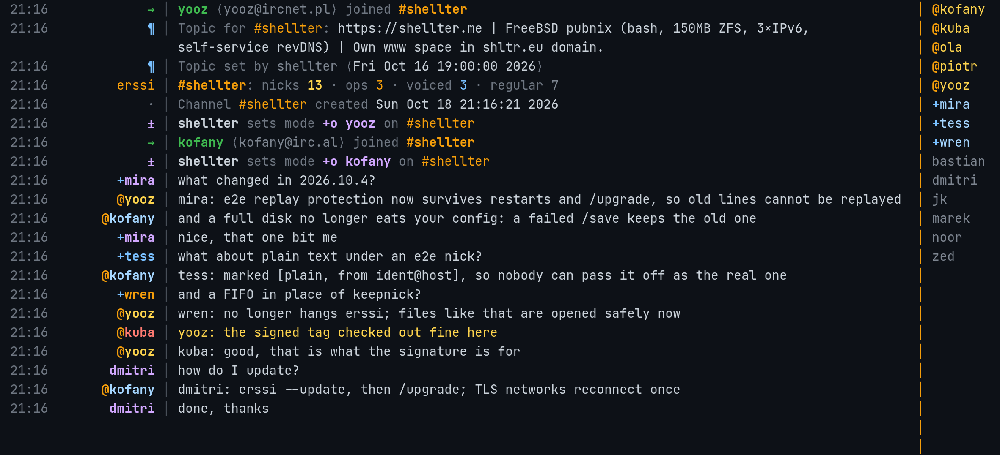

IRC in your shell, made for IRCnet.
erssi Shellter Edition is the modern irssi with what an IRCnet user sets up by hand already built in. It keeps your nick, gathers your mentions, encrypts what you ask it to and updates itself from signed releases.
curl -fsSL https://raw.githubusercontent.com/y-o-o-z/erssi/main/shellter-install.sh | sh No root needed, Linux or FreeBSD. It installs to ~/.local/opt/erssi and keeps its settings in ~/.erssi, so it runs next to irssi.



What an IRCnet user would otherwise script
Everything erssi brings stays: side panels, mouse support, 24-bit colour, image preview, a web frontend and irssi's Perl scripts. This edition adds the rest, and every command has a page in /help.
- /keepnick
-
Your nick, kept
When someone holds your nick, erssi takes it back the moment it is free: through MONITOR where the server offers it, otherwise ISON, and at once when the holder quits or changes nick in a channel you share. If you had to connect on another nick, it does this on its own.
- /mentions
-
Mentions in one place
Private messages, notices from people and channel hilights are collected in a background window and a log only you can read. With the terminal out of focus, a desktop notification pops up through iTerm2, kitty, WezTerm, Ghostty or foot, also inside tmux.
- /search
-
Search your logs
Looks through the logs of the channel or query you are in, or of every network with
-all. It runs in a separate process, so erssi goes on while it searches. - /e2e on
-
End-to-end encryption
RPE2E, natively and wire-compatible with repartee and its WeeChat and irssi scripts: XChaCha20-Poly1305 with per-sender keys, given only to people you accept with
/e2e accept. A message that cannot be read is never hidden: its line says why and names the command that fixes it, and plain text in an encrypted channel is marked.It protects the text of messages, not who talks to whom or when, and NOTICEs stay in clear text. There is no forward secrecy: RPE2E v1.0 has none, and erssi keeps to it so repartee still understands it. What it protects and what it does not
- /layout save
-
Windows that stay where you put them
Side panels with your windows and the channel's nicks, every row of split windows with its own nick list, and saved layouts that come back after a restart exactly as they were.
- /set theme
-
One column for every line
In the
shelltertheme, messages, events, server replies and WHOIS share one column and one separator, and joining a channel prints one summary line instead of a nick table.shellter-lightdoes the same for light terminals. Colours are 24‑bit where the terminal shows them and the nearest of 256 where it does not. - /script load
-
Your irssi scripts
irssi Perl scripts run as they are, and
Irssi::version()returns the release date, so scripts that ask for irssi 1.4.5 or newer load. trackbar.pl comes with it and draws its read marker from the separator column. - /help fe_web
-
A browser, when you need one
fe-web shares the same session with a web client such as NexusIRC. On a shared box it listens on a Unix socket only you can open, so no one else on the machine can reach it.
Install and update
Run the installer on your shell account
The command at the top of this page. What it does depends on the system:
System What the installer does Time Debian 13 or FreeBSD 14, amd64 Installs the release's ready-made binary, once the signature on its SHA256SUMS, its checksum and its manifest check out.seconds Other Linux and FreeBSD systems Builds the newest signed release from source and runs the test suite. Missing packages are named with the command to give your administrator; a missing meson or ninja goes into its own directory. about 2 minutes Either way it links
~/.local/bin/erssi. Binary installs keep the previous release, so--rollbackcan switch back;--uninstallremoves the program and never touches~/.erssi. All optionsStart erssi inside tmux, so the session survives logging out
tmux new -s irc erssi
The first start asks for a network, a nick and the theme, then connects.
Update whenever a release comes out
erssi --check-update # is a newer release available? erssi --update # install it
Then
/upgradein a running erssi loads the new version and keeps your windows and channels. Connections over TLS cannot be handed to the new process, so they reconnect once.
Releases you can check
The one-line install trusts the script it downloads from GitHub, and that script carries the release key and the commit of every release. It builds a release only when its tag is signed by that key and points to the recorded commit, and installs a binary only when the release's checksum list is signed by that key and the package matches it. erssi --update installs only a newer release signed by the same key. To read the script before it runs, check the installer yourself.
- key
- ED25519 SHA256:hF7dvX7vdTfqEsC9LHeujMoHf4NhWdqeBCvN6jXEDAw
- tags
- every release tag is signed with it
- commits
- every commit on main, so the installer can be checked
- packages
- each release's SHA256SUMS, in the namespace erssi-release
- public
- utils/allowed_signers
To check a release tag by hand, in a clone of the repository (gpg is switched off so that only this SSH key counts):
git -c gpg.program=false -c gpg.openpgp.program=false -c gpg.x509.program=false \
-c gpg.format=ssh -c gpg.ssh.allowedSignersFile=utils/allowed_signers \
verify-tag shellter-v2026.10.6
It must report a good signature with the fingerprint above, which you should compare with one you got another way.
The parts that face the network, the web frontend and end-to-end encryption among them, are fuzzed with libFuzzer, and the test suite runs under AddressSanitizer and UndefinedBehaviorSanitizer. The build is hardened by default: PIE, stack protector, stack clash protection, full RELRO, FORTIFY_SOURCE=2. Found a security problem? Report it privately.
In 2026.10.6
The answer to another full review of the code. Nothing from the network can send control characters to your terminal any more, on any terminal type. --uninstall removes only what the installer put there, and other software in the same prefix stays. The web frontend limits a flood of new connections before TLS, keeps the web nick list in step with the server, and gives new certificates a random serial number and the extensions browsers expect. erssi has a manual page of its own, man erssi.
2026.10.4 brought the ready-made binaries for Debian 13 and FreeBSD 14, installed side by side with --rollback to the one before.
Built on erssi and irssi
erssi is the modern irssi by Jerzy “kofany” Dąbrowski and the erssi-org team, on the core of irssi. End-to-end encryption follows RPE2E from repartee. Shellter Edition is made by the Shellter team at shellter.me, whose colours its theme takes.
Free software under the GNU General Public License, version 2 or later. Bugs and ideas go to the issue tracker; CONTRIBUTING.md says how to send a change.